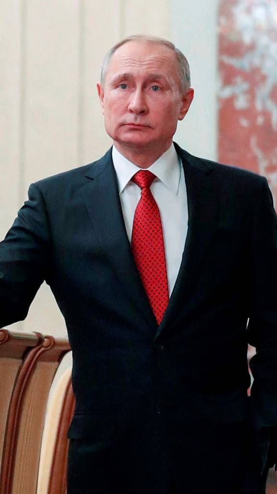
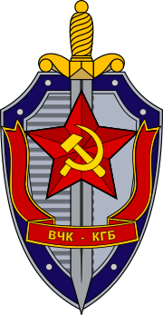
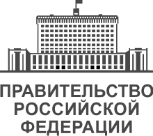
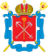
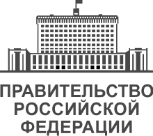
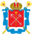
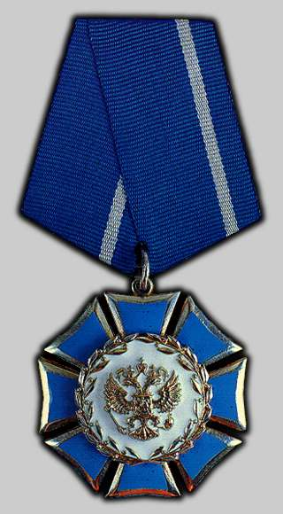

Vladimir Putin
 Presidente da Rússia (Idade: 70)
Presidente da Rússia (Idade: 70)
Atual presidente da Rússia, além de ter servido como agente do KGB no departamento exterior e chefe dos serviços secretos soviético e russo, KGB e FSB, respectivamente. Putin exerceu a presidência entre 2000 e 2008, além de ter sido primeiro-ministro em duas oportunidades: a primeira entre 1999 e 2000, e a segunda entre 2008 e 2012.
TRABALHOU EM:
 



CONDECORAÇÕES:
